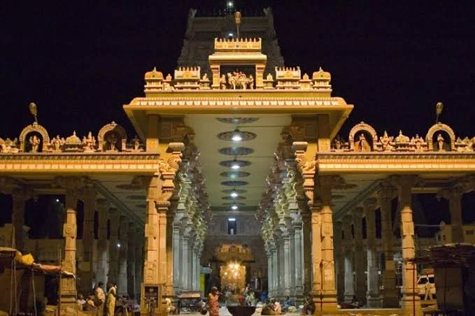
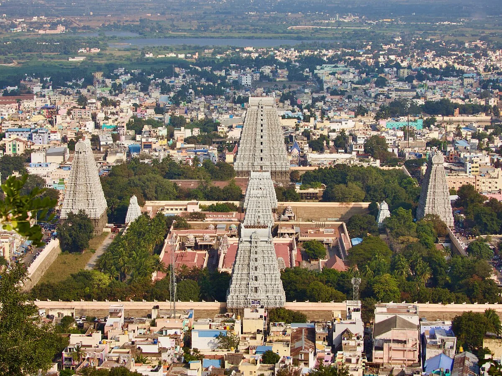
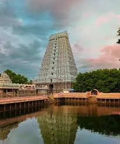
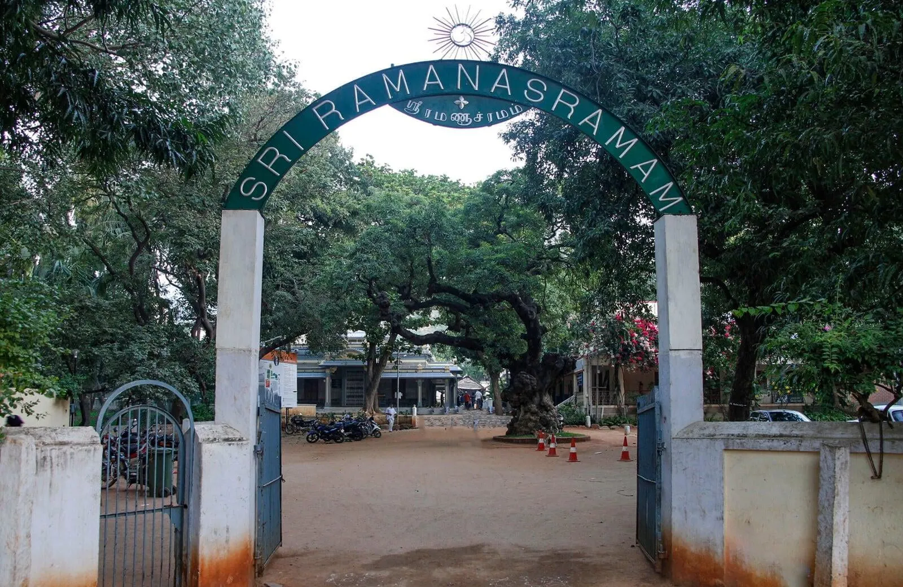
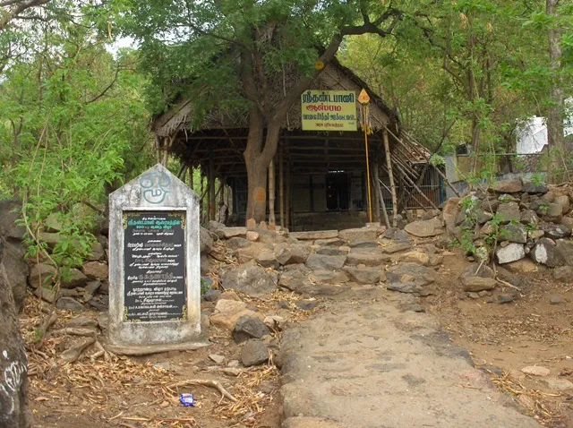
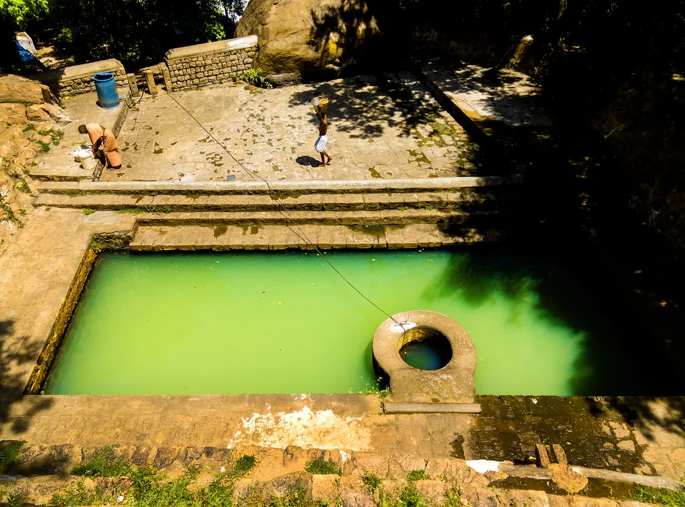
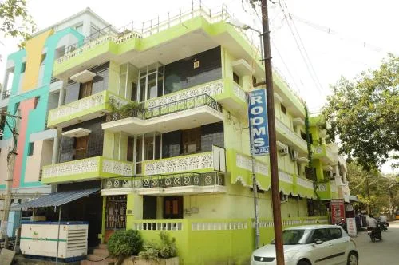

Welcome to Tiruvannamalai
Discover the eternal peace of Arunachala and the grandeur of the temple city.
History & Spiritual Significance
Tiruvannamalai is one of the most ancient and sacred sites in India. It represents the Agni (Fire) element among the five primordial elements (Pancha Bhoota Stalams) of Lord Shiva.
The word 'Arunachala' is derived from 'Aruna' (red/fire) and 'Achala' (hill). According to legend, Lord Shiva once appeared here as a column of fire that had no beginning or end, to quell the ego of Brahma and Vishnu.


Arunachala Hill
Considered a living manifestation of Lord Shiva, the hill is believed to grant liberation to those who merely think of it.
Ancient Heritage
The Arunachaleswarar temple is one of the largest in the world, with inscriptions dating back to the 9th-century Chola era.
Global Seeker Hub
Renowned as a center for self-inquiry, it was the home of Sri Ramana Maharshi, drawing seekers from every corner of the planet.
Famous Places to Visit
Experience the divine energy at these sacred landmarks. Click on cards to discover their history.

Arunachaleswarar Temple
One of the largest temples in Tamil Nadu, dedicated to Lord Shiva as Agni (Fire).
DirectionDivine Architecture
Dating back to the 9th century, this temple represents Agni. Legend says Shiva appeared as an infinite fire column here.

Adi Annamalai
The 'First' Annamalai temple on the western side, older than the main temple.
DirectionBrahma's Worship
Predating the main temple by centuries, this ancient site was established by Lord Brahma. It is known for the phenomenon where the first rays of the sun fall directly on the Lingam during specific days in April and September.
Pachayaman Temple
Dedicated to Goddess Pachaiamman (Parvati) amidst lush greenery.
DirectionDivine Refuge
Located amidst lush greenery, this temple hosted Sri Ramana Maharshi for six months during the 1905 plague. Legend states Goddess Parvati meditated here as 'Pachai' (Green) to rejoin Lord Shiva.
Sathanur Dam
A scenic dam built across the Thenpennai River, popular for its crocodile farm and parks.
DirectionScenic Marvel
Built in 1958 across the Thenpennai River, this dam is famous for its large crocodile farm, fish grotto, and beautiful parks, making it a favorite weekend getaway for locals and tourists alike.

Arunagirinadha Temple
Dedicated to the 15th-century saint-poet Arunagirinathar, author of Thiruppugazh.
DirectionBirthplace of Thiruppugazh
It was here that Lord Murugan saved the 15th-century saint Arunagirinathar from suicide. Transformed, he composed the 'Thiruppugazh', a monumental collection of 16,000 hymns in praise of Lord Murugan.
M.K. Stalin Eco-Park
A lush green recreational space perfect for evening walks and relaxation.
DirectionUrban Oasis
A recently developed eco-park that offers a serene escape with walking tracks, children's play areas, and lush landscaping, contributing to the town's green cover and community well-being.
Ashramam
Explore the sacred abodes of saints including Ramana and Seshadri Swamigal.
Hill Trekking
Discover sacred caves and viewpoints on the holy Arunachala Hill.
Jeevasamadhi
Visit the sacred resting places of realized Siddhors like Mookupodi Siddhar.

Center of Self-Enquiry
Home to the great sage Ramana Maharshi from 1922 to 1950. The Ashram centers around his Samadhi shrine, a powerful locus of silence and peace.

Miraculous Siddhar
Known as the "Saint with the Golden Hand," he was a contemporary of Ramana Maharshi. He performed many miracles and often played the role of a madman to hide his divinity.

Mother's Liberation
Ramana Maharshi lived here from 1916 to 1922. It is the sacred spot where his mother, Alagammal, attained Mahasamadhi and was liberated by his touch.

Visiri Samiyar
Known as the "Godchild of Tiruvannamalai," this massive architectural marvel is dedicated to the saint who blessed devotees with his palm-leaf fan (visiri) and chanting.
Service & Sadhu Seva
Founded to serve the sadhus and devotees of Arunachala. It provides food (Annadanam) and accommodation, embodying the spirit of selfless service.
The OM Cave
Shaped like the sacred 'OM', this cave houses the ashes of the 13th-century saint Virupaksha Deva. Ramana Maharshi meditated here for 17 years (1899-1916).

Summer Retreat
Ramana Maharshi often stayed here during the hot summers. It is said he composed the 'Five Hymns to Arunachala' near this serene cave.

Aerial Panorama
Located near Skandashram, this point offers a breathtaking aerial view of the massive Arunachaleswarar Temple towers and the entire town spread below.

Sacred Spring
Meaning 'Mother's Milk', this holy spring is believed to have been created miraculously. Devotees drink the water for its reputed healing properties.
Giri Valam: The Divine Path
A 14km spiritual journey around the holy Arunachala Hill, visiting the eight cardinal Lingams and sacred caves.

Deity: Lord Indra
Significance: Indra, the King of Devas, worshipped Shiva here to be absolved of his sins. It marks the beginning of the spiritual journey.
Benefits: Grants prosperity, long life, and power. Removes obstacles in career and governance.
Zodiac/Planet: Taurus (Rishabam) & Libra (Thulam) / Sun & Venus.
Agni Lingam
Located in the South-East direction, representing the element of Fire.
DirectionDeity: Lord Agni
Significance: Stands for light, energy, and transformation. It is the only lingam situated on the right side of the Girivalam path.
Benefits: Relief from diseases, mental stress, and fear. Bestows good health and strong will.
Zodiac/Planet: Leo (Simham) / Moon (Chandra).
Deity: Lord Yama
Significance: Yama, the God of Justice and Death, worshipped here. The holy tank 'Simha Theertham' is nearby.
Benefits: Removes fear of death and financial debts. Grants longevity and justice.
Zodiac/Planet: Scorpio (Viruchigam) / Mars (Sevvai).
Deity: Niruthi (Asura King)
Significance: Legend says the King of Giants (Niruthi) worshipped Shiva here. It protects from negative forces.
Benefits: Child blessing for couples, protection from evil eye and black magic.
Zodiac/Planet: Aries (Mesham) / Rahu.
Ner Annamalai
The sacred spot where Lord Shiva revealed himself to Goddess Unnamalai.
DirectionDeity: Lord Arunachaleswarar & Unnamalai Amman
Significance: The spot where Lord Shiva appeared to Goddess Unnamalai Amman after her penance. It offers a straight view ('Ner') of the hill.
Benefits: Spiritual clarity, fulfillment of prayers, and unity in relationships.
Darshan: Viewing the hill from here is considered 'Somaskanda' darshan.
Deity: Lord Varuna
Significance: Varuna, the God of Rain, created a holy tank (Varuna Theertham) here. He clears sins related to water.
Benefits: Success in career/social life, protection from water-related ailments (dropsy).
Zodiac/Planet: Capricorn (Makaram) & Aquarius (Kumbam) / Saturn (Shani).
Deity: Lord Surya (Sun)
Significance: Dedicated to the Sun God. Worshipping here brings the energy of the Sun.
Benefits: Good health, eyesight, vitality, authority, and removal of skin ailments.
Deity: Lord Vayu
Significance: Vayu, the God of Wind, provides the vital breath. This spot is known for a constant breeze.
Benefits: Relief from heart/lung diseases, stomach issues, and stress. Peace of mind.
Zodiac/Planet: Cancer (Kadagam) / Ketu.
Deity: Lord Chandra (Moon)
Significance: Dedicated to the Moon God. It helps cool the mind.
Benefits: Mental peace, emotional balance, relief from stress and depression.
Deity: Lord Kubera
Significance: Kubera, the Lord of Wealth, worshipped Shiva here. It is one of the most popular lingams.
Benefits: Abundant wealth, prosperity, and improvement in financial status.
Zodiac/Planet: Sagittarius (Dhanusu) & Pisces (Meenam) / Jupiter (Guru).
Iduku Pillayar Kovil
Known as Motcha Margam, a sacred spot where devotees crawl through a narrow passage.
DirectionMotcha Margam
Significance: Believed that crawling through this narrow temple passage leads to liberation (Moksha) and cleanses past sins.
The Experience: Devotees lie down and slide through the tiny opening, representing the soul's passage from darkness to divine light.
Deity: Lord Esanyar
Significance: Represents one of the seven Rudras of Shiva. It marks the completion of the Girivalam loop.
Benefits: Wisdom, knowledge, peace of mind, and success in education and arts.
Zodiac/Planet: Gemini (Mithunam) & Virgo (Kanni) / Mercury (Budhan).
Book Your Stay
Find the perfect sanctuary for your spiritual journey, from humble ashrams to luxury resorts.

BoutiqueArunachala Ramana Home
Quiet boutique stay with a panoramic view of the holy hill. Perfect for silent retreats.
Sparsa Resort
Eco-friendly luxury resort offering wellness programs, pool, and sustainable living.
Athena Hotel
Modern 4-star amenities with grand views of Arunachala. Excellent for families.
Sterling Arunai Anantha
Premium resort with a direct view of the holy hill. Offers curated spiritual experiences.
Ellora Hotel
Located within a 5-minute drive of Pachaiamman Temple. 24-hour front desk & luggage storage.
Arudra Residency
Just a 2-minute walk from Arunachaleshvara Temple. Smoke-free hotel with free parking.
Namo Residency
Detailed attention to service and comfort. Free Wi-Fi and transport arrangements available.
Lingaa's Residency
15-minute walk to Temple. Smart TVs and modern amenities in a convenient location.
Ramana Towers
Luxury apartment-style rooms with 1 bedroom. Breakfast included. 2.1km from Temple.
Essential Services & Support
Access vital services, financial aid, and emergency contacts in one place.
Apollo Pharmacy
Reliable pharmacy chain, often open 24/7 or late hours. Located near Sannathi Street.
Extended HoursView LocationSri Ramanasramam Dispensary
Located in TSR Nagar, providing community medical services and supplies.
ServiceView LocationGovt. Medical College Hospital
Full-facility general hospital for major medical emergencies.
04175 - 233131
View LocationRangammal Hospital
Known private hospital providing specialized care and emergency services.
04175 - 257700
View LocationIndian Overseas Bank
Main Branch for Pilgrims. located opposite Sri Ramanasramam on Chengam Road.
Near AshramView LocationUnimoni Forex
Licensed currency exchange for international travelers. Located at Big St, Pavazhakundur.
ForexView LocationSBI & HDFC ATMs
Multiple ATMs located at Sannathi Street and near the Temple Main Entrance.
24/7 AccessFind NearestCentral Bus Stand
Direct buses to Chennai (4hrs), Bangalore (5hrs), and Pondicherry (2.5hrs). Frequent TNSTC & Private buses.
Open in MapsRailway Station (TNM)
Connects to Vellore, Villupuram, and Tirupati. Located ~2km from the temple.
Open in MapsTaxi & Auto Stands
Available at Car Street and Ashram area. Pre-paid taxi counters available for long distance.
100 / 112
Police & General Emergency
108
Ambulance Service
Fire Station
District Collectorate
Administrative headquarters for Tiruvannamalai District. Located in Vengikkal on Vellore Road.
View LocationTaluk Office
Major government office for land and revenue related services. Located near the Collectorate.
View LocationAdyar Ananda Bhavan (A2B)
Pure vegetarian chain known for high-quality South Indian breakfast and meals.
View LocationThe Dreaming Tree
Popular rooftop cafe serving western vegetarian dishes, salads, and coffee.
View LocationSparsa Restaurant
Eco-friendly vegetarian dining in a serene resort setting. Great for families.
View LocationSakthi Cinemas
Modern multiplex offering 4K projection and Dolby Atmos sound experience.
View LocationSri Balasubramaniar Cinemas
Famous local theatre with upgraded Laser screens and comfortable seating.
View LocationPlan Your Spiritual Journey
Everything you need to know for a peaceful and fulfilling visit to Tiruvannamalai.
By Air
Chennai International Airport (170km) is the nearest major airport. Bangalore Airport is also a viable option (200km).
Accommodation
From peaceful ashram guest houses like Sri Ramanasramam to luxury boutique resorts, find the perfect stay for your spiritual retreat.
Local Transport
Auto-rickshaws are plentiful for short trips. For the 14km Girivalam, many pilgrims walk, while others rent bicycles or electric scooters.
Food & Dining
Savor authentic South Indian vegetarian meals. Many organic cafes around Ramanasramam serve international cuisines for global seekers.
Health & Safety
Carry basic medicines and sun protection. Several multi-specialty hospitals are available in the town center for emergencies.
Ideal Duration
A minimum of 2-3 days is recommended to cover the Temple, Ashram, and the sacred Girivalam circumambulation.
Best Time to Visit
Winter (Nov - Feb) offers pleasant weather (15°C-30°C). Karthigai Deepam (Nov/Dec) is the grandest festival.
Expert Travel Tips
- Start Early: Begin Girivalam before dawn (4 AM) to avoid the heat.
- Respect Silence: Maintain silence in meditation halls and caves.
- Connectivity: 4G/5G works well, but Ashrams often have limited Wi-Fi.
- Girivalam Apps: Use local apps to track your distance and landmark stops.
- Monkeys: Keep food items inside bags to avoid attracting curious monkeys.
- Shoes: You must leave shoes outside temples; carry a light cloth bag for them.
- Cash: Keep some cash handy as small shops might not accept digital payments.
- Dress Code: Shoulders and knees should be covered when entering temples.
Secure Booking
Verified properties only
Best Price Guarantee
No hidden charges
Local Support
24/7 assistance
Take Divinity Everywhere
Install the Tiruvannamalai Info Install the Tiruvannamalai Info app for instant access to sacred guides and maps, anytime and anywhere.
- Lightning Fast Access
- Works faster
- Spiritual Notifications
Scan to Install
Available for Android & iOS